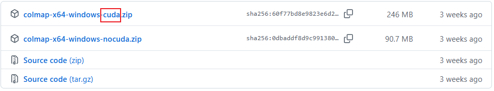
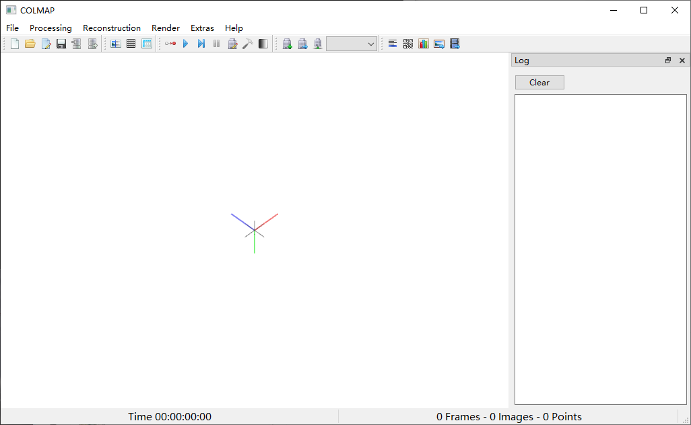
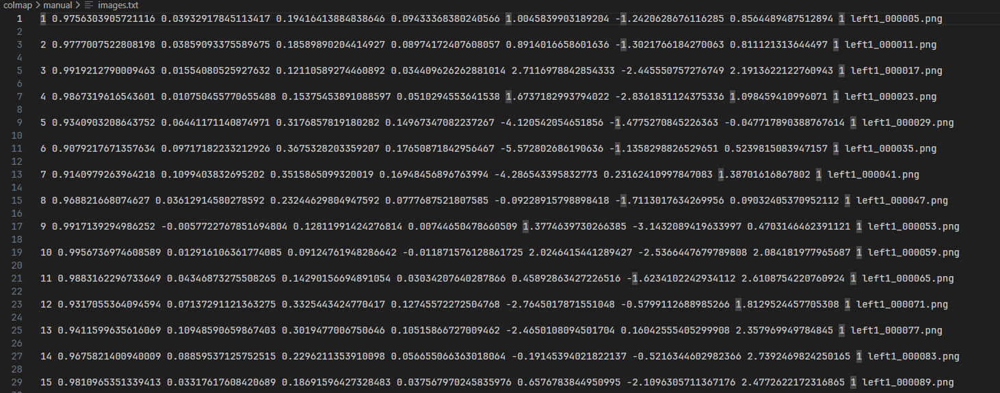
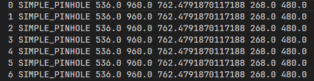
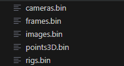
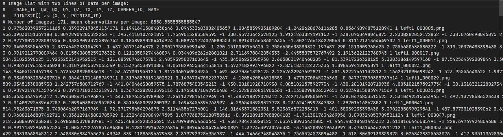
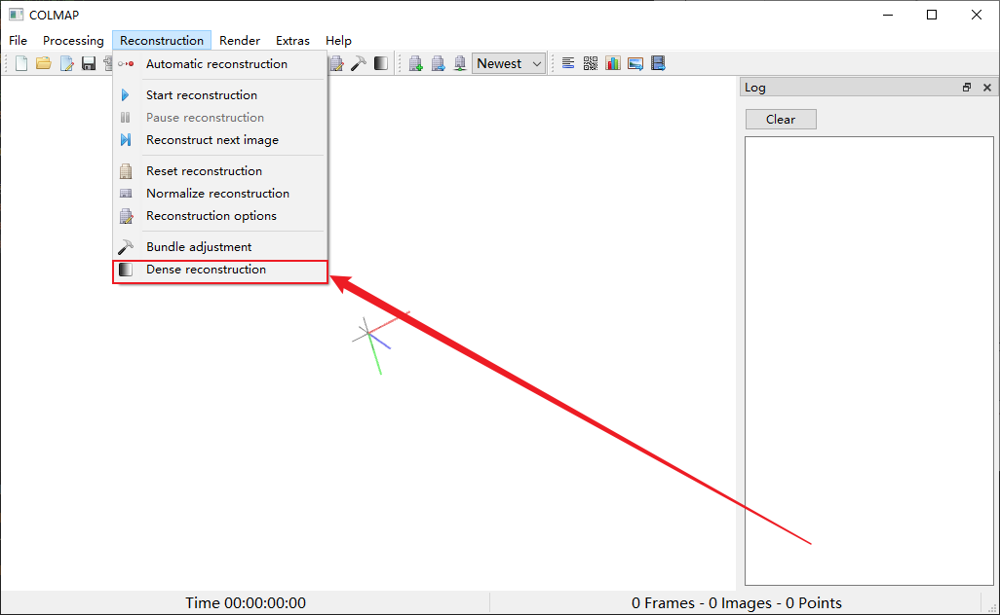
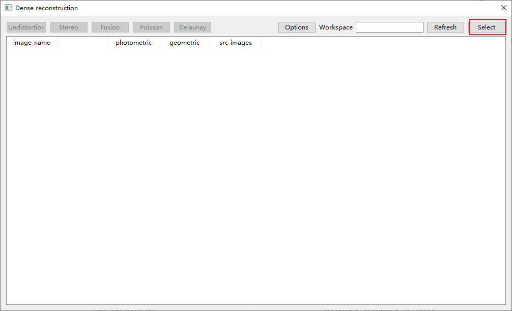
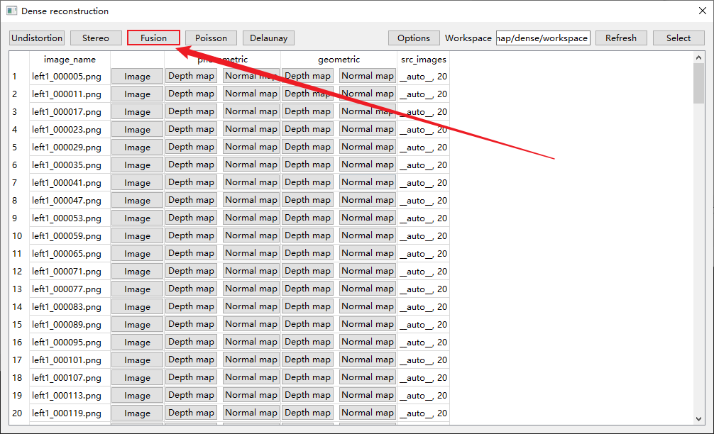
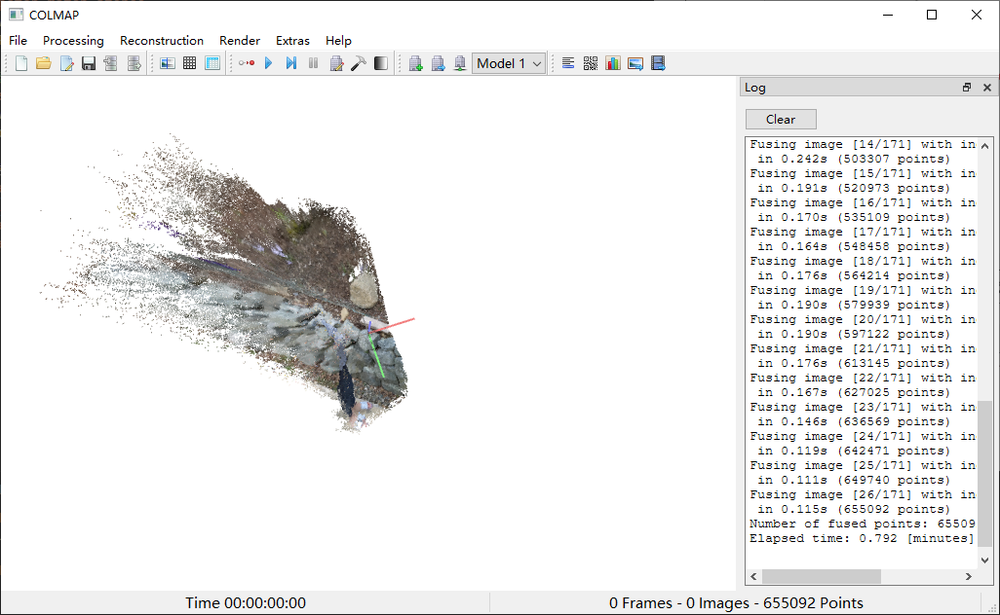

已知相机位姿情况下的colmap稀疏或稠密重建
本文最后更新于 2025年12月16日 晚上
已知相机位姿情况下的colmap稀疏或稠密重建
环境准备
首先在官网上下载需要版本的colmap，最好是cuda版本，可以利用GPU加速。

解压后找到colmap.bat文件双击即可打开GUI界面。

这里建议把colmap的路径添加到环境变量中，方便在cmd或powershell中直接使用colmap命令。否则需要用绝对路径：
设置 ->搜索环境变量 ->编辑系统环境变量 ->环境变量 ->系统变量 ->Path ->编辑 ->新建 ->添加colmap的bin目录路径。
已知相机位姿情况下的稀疏重建
首先准备创建如下文件夹结构：
1 | |
point3D.txt是空文件后续会存放生成的3D点云数据，images.txt用来存放相机位姿和对应的图像文件名。中间必须隔一行用来存放提取的特征点。

其中cameras.txt存放相机内参和相机模型，如果相机内参存在较大的畸变系数，那么应该将cameras.txt中的参数复制到数据库中。官方有一个脚本文件scripts/python/database.py可以修改数据库中的文件。

然后准备好input文件夹存放图像。
最重要的是如何生成.db文件这里就是因人而异了，如果每个数据集他的内外参存放格式是不一样的那么就需要自己编写脚本生成.db文件。这一部分可以让AI根据你的数据集格式帮你生成脚本。这个过程和上面的cameras.txt和images.txt文件生成可以是一起的。
比如说我有一个json文件存放相机内外参：
1 | |
那么就可以让AI写一个脚本生成txt文件的同时还可以生成.db文件。这里注意我们的数据要转换成colmap格式。
这样我们所需要的文件就都准备好了。文件结构如下：
1 | |
接下载我们需要创建一个sparse/0文件夹用来存放稀疏重建结果。一个dense/workspace文件夹用来存放稠密重建结果。
1 | |
运行colmap进行稀疏重建
打开cmd或powershell，(我这里打开powershell和cmd有些细微差别)输入：
1 | |
这里powershell命令换行要用"`"键盘左上角的符号。这里我已经添加了环境变量所以可以直接使用colmap命令，如果没添加环境变量则需要使用全局路径C:\path\to\colmap.exe。
我们的.db文件在这个过程中会被修改用来存放特征点和匹配信息。生成的稀疏重建结果存放在sparse/0文件夹中。

这里我们怀疑这里重建用的位姿是不是我们导入的，因为特征提取特征匹配也会生成位姿信息，这里我们可以查看生成的.bin文件和.txt文件对比一下。创建sparse_txt文件夹用来存放转换后的txt格式文件，然后运行下面的命令：
1 | |
对比一下与你从数据集生成的images.txt文件中的位姿信息是否一致。如果points3D.txt文件中有点云数据说明稀疏重建成功。也可以用GUI界面打开查看。

运行colmap进行稠密重建
虽然官网说，稠密重建可以不需要稀疏重建但是我也没看到怎么使用已知的位姿创建的.db文件，所以这里我们还是使用上面生成的稀疏重建结果进行稠密重建。
1 | |
生成的稠密点云数据存放在dense/workspace/fused.ply文件中，可以用GUI界面打开查看。

点击select选择dense/workspace/文件夹，然后点击fusion：


然后就得到最终的稠密点云结果。

在无头服务器上也是一样的操作，这里完全可以脱离GUI界面进行操作。